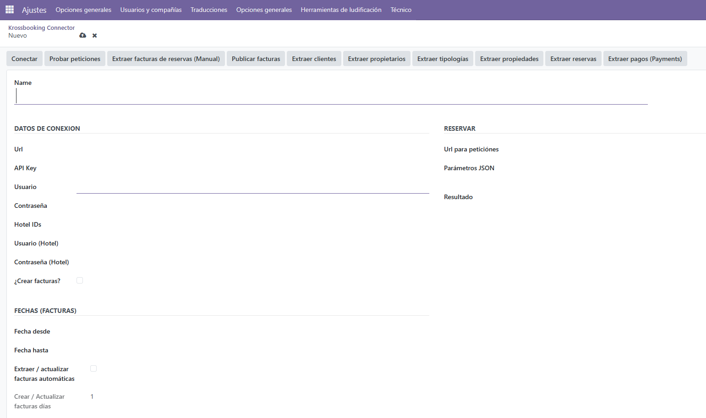
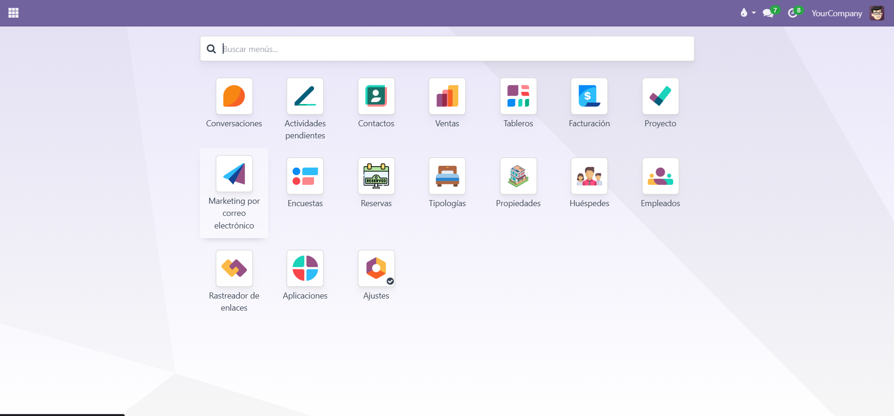
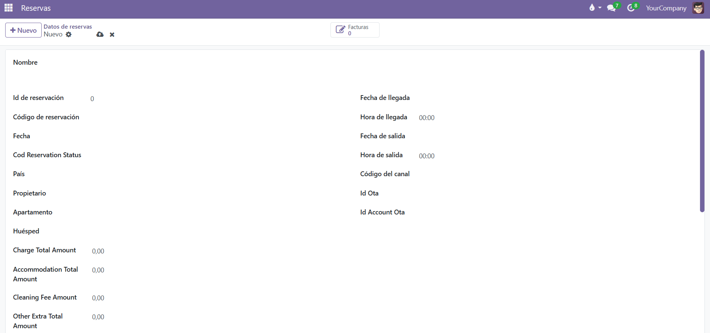
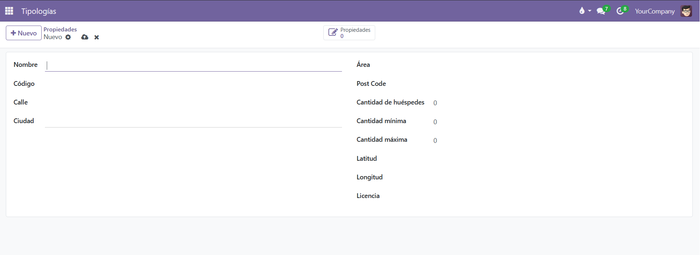
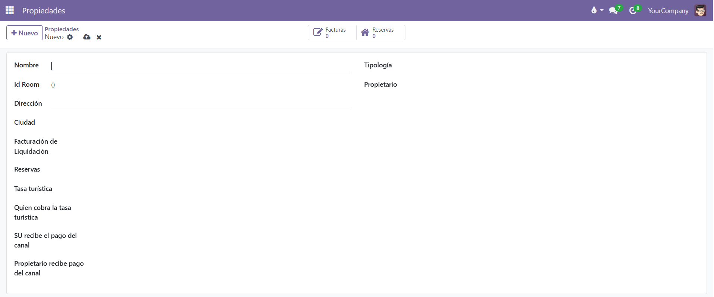
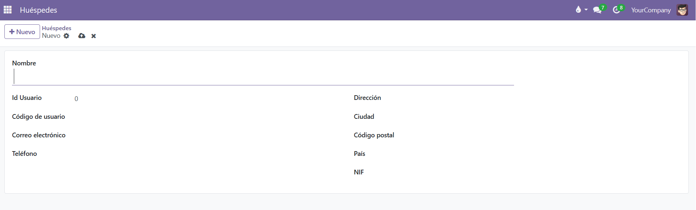

Integración Krossbooking + Odoo
Los propietarios que alquilaban sus habitaciones dedicaban horas a copiar reservas y conciliar cobros manualmente entre Krossbooking y el ERP. Desarrollé una integración vía API REST que sincroniza reservas, factura automáticamente y concilia los pagos, reduciendo en torno a un 30% el tiempo dedicado a estas tareas frente al proceso manual.